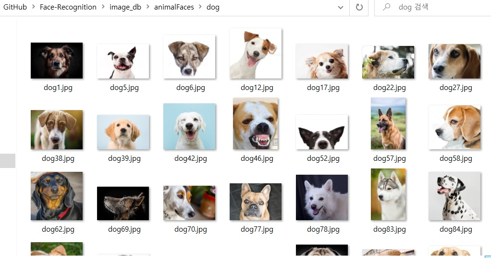
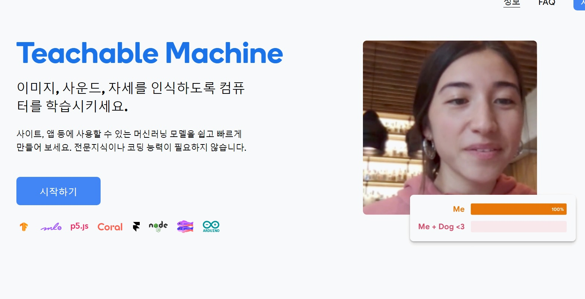
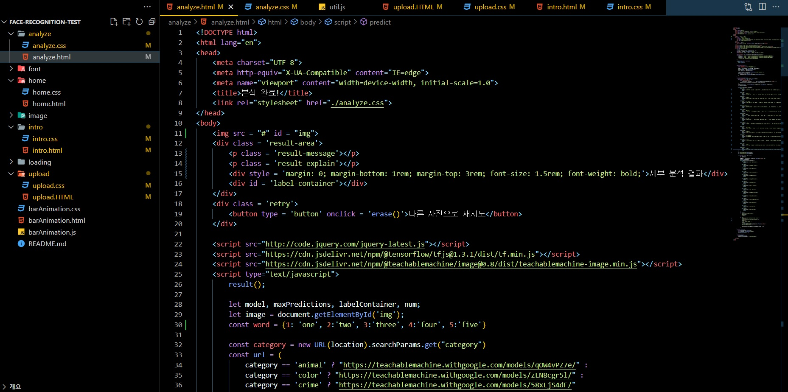

2022 단웅제 알고리즘 문제 해결부에서 제작한 행사용 사이트입니다.
요즘 유행하는 노벨AI나 범죄자 테스트 등 인공지능과 관련된 코딩들이 각광을 받고 있어,
이번 단웅제때 제작할 사이트를 구상했습니다.
제작한 사이트는 범죄자상 테스트처럼 사전에 추린 사진들로 AI에게 분류하는 법을 학습시키고 사이트를 뼈대를 만든 이후,
입력받은 사진을 AI가 분류기준을 판단해서 확률성으로 닮음성을 판단하도록 제작되었습니다.
제작 방법

프로그래밍 언어 파이썬으로 학습을 할 이미지를 크롤링 (이미지 검색, 다운로드 자동화)

구글의 무료 이미지 분석 서비스 Teachable Machine으로 학습

HTML 및 CSS 강의를 배우고 웹사이트 제작
Credit
제작: 알고리즘 문제해결부
동아리 외부강사 선생님: 서경민
아이디어: 서경민, 이준서
프로젝트 주도: 이준서
이미지 크롤링 및 학습: 이준서
이미지 선별: 강동원, 김규민, 서민재, 이준서
웹페이지 제작: 강동원, 김규민, 서민재, 이준서